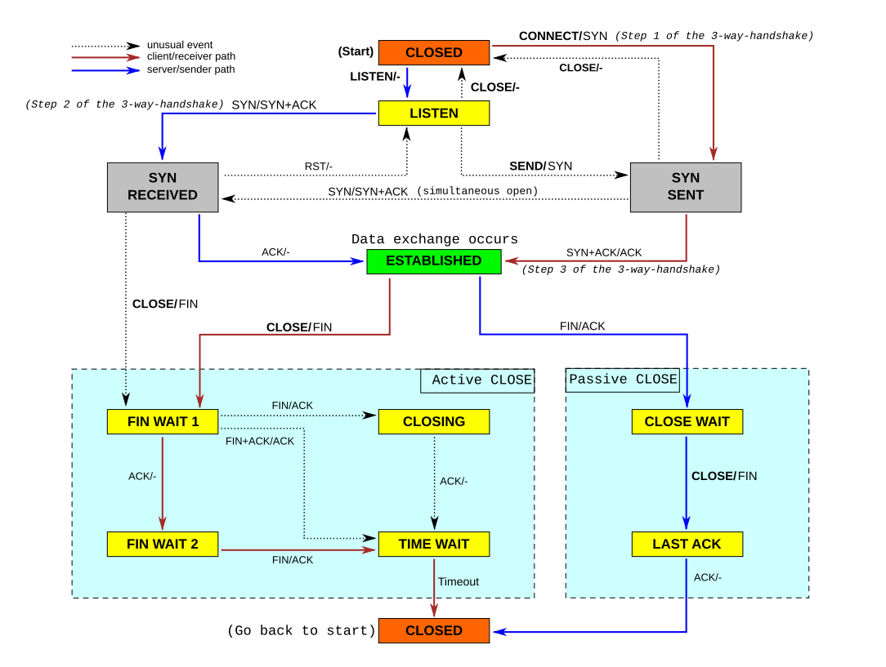

Writing a TCP/IP stack from scratch, ARP to TLS in a kernel

src/net/, and the arrows are the part that turned out to need care.IP stack connections.svg. en:User:Kbrose, CC BY-SA 3.0, via Wikimedia Commons.{kind=link}
Every layer here is hand-written: ARP, IPv4, ICMP, UDP, TCP, DHCP, DNS and TLS 1.3. Underneath them are drivers for the Intel e1000, the Realtek RTL8168 and USB CDC Ethernet. Interfaces are named — lo, eth0, wlan0 — routing picks one by destination, and every address belongs to an interface, not to the machine.
ping was the first milestone, deliberately, because it exercises the entire path and produces one visible result. PCI discovery, an MMIO mapping, DMA rings, frame parsing, ARP resolution, an IPv4 header with a correct checksum, and a reply that has to actually come back. Anything broken anywhere in that chain shows up as silence, and silence is straightforward to bisect. The alternative first milestone is a TCP state machine failing intermittently, which is not.
The rule that shapes everything
The poll function never dispatches into a transport state machine. It only queues.
This is not a style preference, it closes a re-entrancy trap that is very easy to walk into. Sending an IPv4 packet calls address resolution, and resolution has to poll the card while it waits for the ARP reply. If poll ran TCP's state machine directly, a connection could re-enter its own control block through that path while an earlier mutable borrow was still live. So poll pushes frames onto an inbox, and TCP and UDP drain their own inboxes from a context where nothing is borrowed. The cycle can only form in one place, and that is where it gets broken.

{kind=link}
What the TCP implementation is, and is not
It handles one connection at a time, actively opened, which is enough to fetch something over HTTP — and a byte stream is the thing every useful protocol is built on, so until one exists the network can only answer questions about itself. What is there: the RFC 793 state machine for an active open, RFC 6298 retransmission with Jacobson/Karels round-trip estimation and Karn's algorithm, sequence arithmetic that survives wraparound, an MSS option, and a receive buffer that advertises a real window.
What is absent is absent on purpose, and each omission has a price:
- No reassembly queue. An out-of-order segment is dropped and acknowledged with the sequence still wanted, which is a duplicate ACK and makes the peer resend. Correct, and slower than necessary at exactly the moment the network is already losing packets.
- No congestion control. A fixed four-segment cap on flight size stands in for it. That is not TCP-friendly and would be rude at scale; it is defensible while every transfer is a short request.
- No Nagle and no delayed ACK. Both trade latency for efficiency, and this stack has no bulk traffic to be inefficient with.
- A shortened TIME_WAIT of two seconds rather than twice the maximum segment lifetime, which is a real hazard traded against a single connection slot.
No interrupt-driven receive
The card is polled, never interrupt-driven: during a blocking call by the wait loop, and otherwise by a service function called from the shell's idle loop. So the stack advances at best a hundred times a second while the machine sits at a prompt, and not at all while a long command runs unless that command yields. A connection genuinely makes no progress during a long generation, and that is visible from the outside as a stall.

{kind=link}
Bugs worth knowing
- Ethernet pads frames to 60 bytes. A bare 40-byte TCP ACK therefore arrives with 20 bytes of whatever was in the buffer trailing it. IPv4 payloads have to be trimmed to the length the header declares, never to the length the frame happens to be.
- A shared event ring needs demultiplexing. In the USB driver, waiting for "a transfer event" instead of "a transfer event for my endpoint" meant a send completed against an arriving receive. DHCP kept working, because it alternates send and receive and the mismatched events happened to pair up; ARP broke, because it has no send to piggyback on. That asymmetry is what identified the bug — the protocol that worked was the clue, not the one that failed.
What it can actually do
From the shell: dhcp obtains a lease and configures the interface, ping round-trips, dns example.com resolves, and https example.com / completes a TLS 1.3 handshake, validates the certificate chain against a bundled root store, and returns the page. The browser sits on top of the same path and renders it.